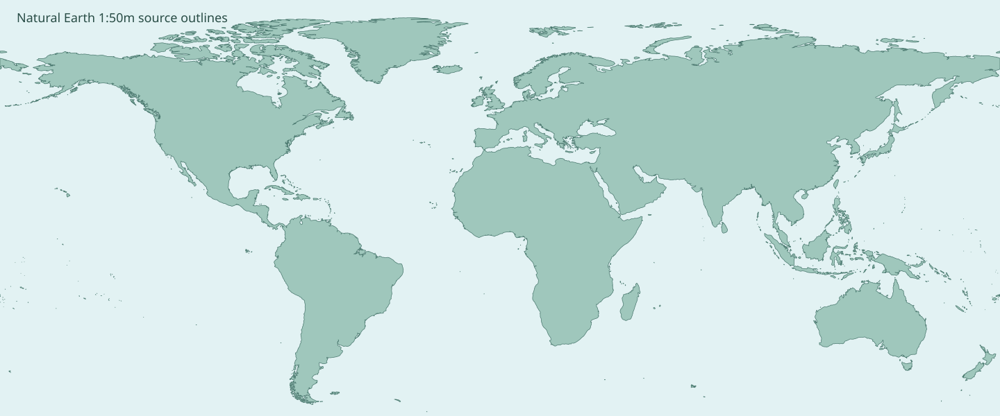
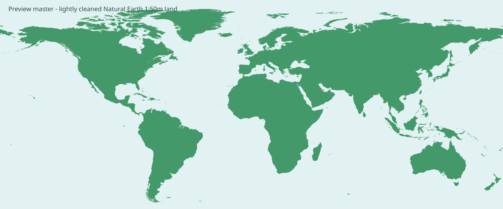
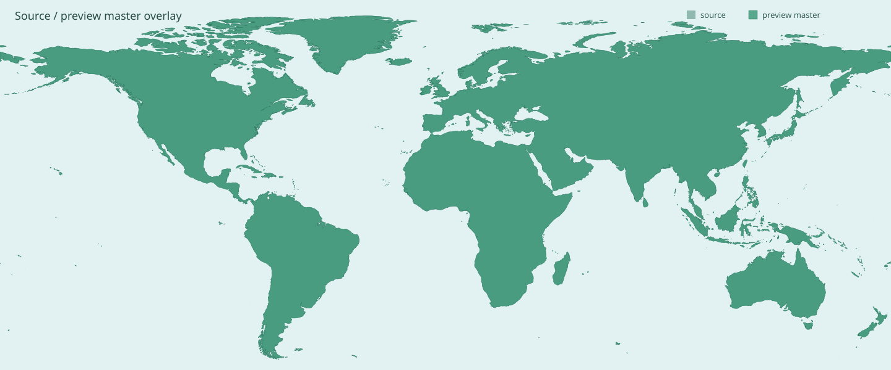
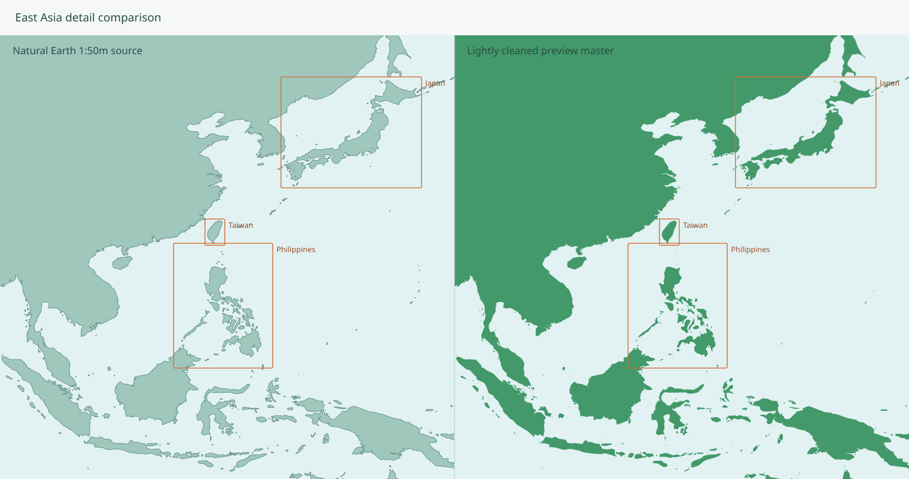

Preview master is rebuilt directly from Natural Earth 1:50m land polygons. It receives only light coastline simplification and a small-island noise filter. No icon master, projection frame, animation, or route UI is generated in this checkpoint.



